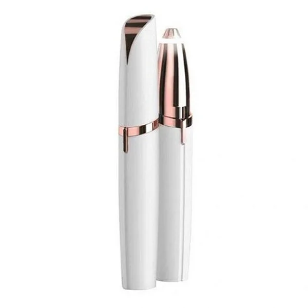

Abra a caneta
Retire a tampa para expor a ponta aparadora.
Traço Fino · Caneta aparadora
Apare os pelinhos ao redor da sobrancelha com a ponta compacta da Traço Fino. Abra a tampa e retoque onde precisa, até na hora de sair.
Comprar Traço Fino
A ponta compacta ajuda a alcançar os pelinhos ao redor do desenho da sobrancelha.
Retire a tampa para expor a ponta aparadora.
Identifique os pelinhos fora do contorno e siga as instruções do produto para apará-los.
Recoloque a tampa para proteger a ponta ao guardar a caneta.
A Traço Fino apara pelinhos ao redor do desenho da sobrancelha. O formato de caneta facilita o retoque em pontos específicos.
O modelo mostrado tem corpo branco e acabamento rosé.
Caneta aparadora de sobrancelha em branco e rosé.
Compra ainda indisponívelIr para o pagamento